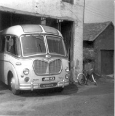
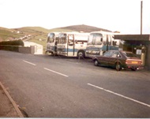

Garej Ifan Jones Parry
Cychwynnodd y busnes tua 1949. Roedd garej Ifan Jones Parry yn lle yr arferai cymaint o hogiau ifanc y pentref gyfarfod. Roedd bwrdd billiards uwchben y garej a byddai ymarfer bocsio yn digwydd yma pan na fyddai’n bosibl defnyddio’r bwrdd billiards. Byddai’r cwmni drama yn ymarfer yma. Roedd pympiau petrol (ESSO/National) yno, ac fe aethant ar dân yn y 1970au.

Rhai o’r pentrefwyr y tu ôl i fws Ifan Jones Parry.
Un o fysus Ifan Jones Parry yn y garej.

Ifan Jones a Wil Pen Cefn.
Busys Ifan Jones Parry wedi’u parcio dros y ffordd â’r garej.